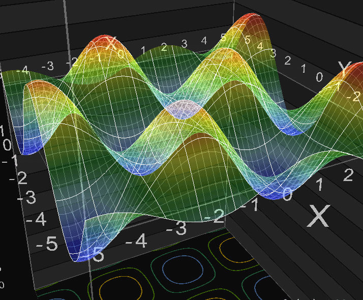

Matemáticas III
Bienvenidos
En esta sección podrá encontrar basta información que le permitirá comprender y trabajar de una forma empírica los conceptos olvidados en clase.
Utilizando las guías elaboradas para cada tópico de la asignatura.

f(x,y)=sen(x)·cos(y)
La anterior figura es una de muchas superficies que podremos observar y construir, a través de los objetivos planteados
para la asignatura.